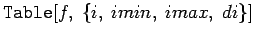

Mathematica stellt eine Reihe von Operationen bereit, die spezielle Listen aufbauen. Eine dieser Operationen, die häufig bei der Arbeit mit mathematischen Funktionen eine Rolle spielt, ist :
| erzeugt eine Liste mit imax Werten von f=f(i) | |
| erzeugt eine Liste von Werten von f von imin bis imax | |
|  | das gleiche wie letztes, nur in Schritten di |
| Beispiel |
|
Tabelle der Binominalkoeffizienten zu n=7: |
Mit können auch mehrdimensionele Tabellen hergestellt werden. So erhält man mit